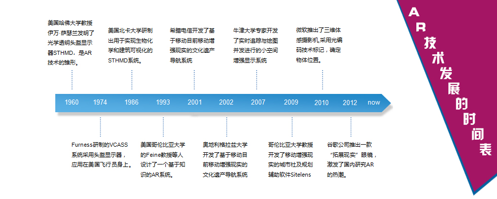
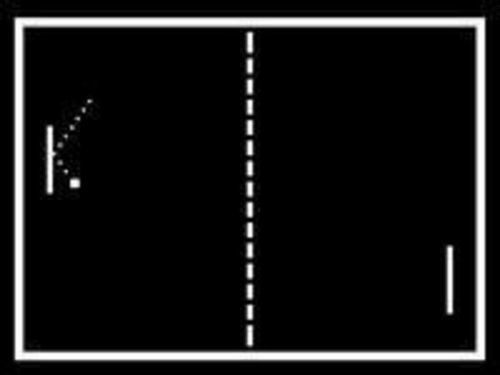
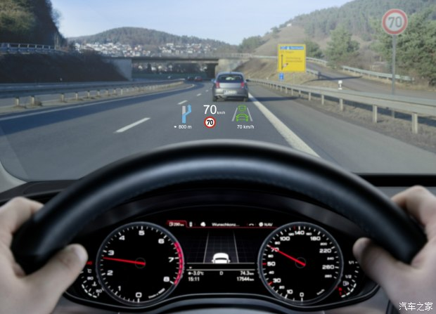
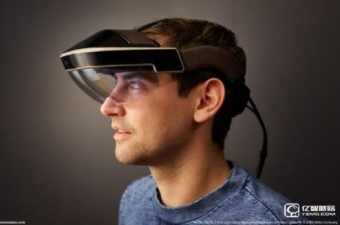
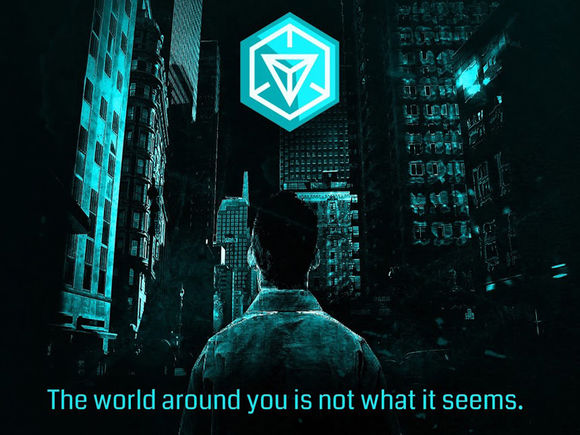

AR发展历史


增强现实显示器，将计算机生成的图形叠加到真实世界中。自从二十世纪七十年代早期，Pong进入电子游戏厅以来，视频游戏走进我们的生活已经有30多年了，但是一直局限在屏幕中的2D世界中，而增强现实这一新技术的到来，将通过增强我们的见、声、闻、触和听，进一步模糊真实世界与计算机所生成的虚拟世界之间的界线。

从虚拟现实（创建身临其境的、计算机生成的环境）和真实世界之间的光谱来看，增强现实更接近真实世界。增强现实将图像、声音、触觉和气味按其存在形式添加到自然世界中。由此可以预见视频游戏会推动增强现实的发展，但是这项技术将不仅仅局限于此，而会有无数种应用。从旅行团到军队的每个人都可以通过此技术将计算机生成的图像放在其视野之内，并从中获益。

增强现实将真正改变我们观察世界的方式。想像您自己行走在或者驱车行驶在路上。通过增强现实显示器（最终看起来像一副普通的眼镜），信息化图像将出现在您的视野之内，并且所播放的声音将与您所看到的景象保持同步。这些增强信息将随时更新，以反映当时大脑的活动。

目前，Ingress 是全球最受欢迎的增强现实APP。
AR-interesting，an interesting web
copyright 2016 By Interesting Working Group
Most contents above (photos included) are derived from the Internet.